library(igraph)
library(dplyr)
library(readr)
library(ggplot2)
library(tidyr)
set.seed(42)
out_dir <- "codex_outputs"
dir.create(out_dir, showWarnings = FALSE, recursive = TRUE)
theme_codex <- ggplot2::theme_minimal(base_size = 13) +
theme(
plot.title.position = "plot",
plot.title = element_text(face = "bold", size = 14, margin = margin(b = 8)),
axis.title = element_text(face = "bold"),
panel.grid.minor = element_blank(),
panel.grid.major = element_line(color = "#d9d9d9", linewidth = 0.3),
legend.position = "right"
)
theme_set(theme_codex)
open_pdf_device <- function(path, width, height) {
if (capabilities("cairo")) {
grDevices::cairo_pdf(path, width = width, height = height)
} else {
grDevices::pdf(path, width = width, height = height, useDingbats = FALSE)
}
}MUSAE GitHub Network Analysis (Chapters 2-7 Lens, R)
Scope
This report follows the Chapter 2-7 flow from Statistical Analysis of Network Data with R:
- Chapter 2: Manipulate graph data and decorate vertices with attributes.
- Chapter 3: Visualize the graph with practical layouts for large networks.
- Chapter 4: Describe graph characteristics (degree, centrality, cohesion, assortativity).
- Chapter 5: Compare observed structure to mathematical random-graph baselines.
- Chapter 6: Fit statistical network-style models (dyad logistic proxy, block model, latent embedding).
- Chapter 7: Perform topology inference through link prediction.
edge_key <- function(u, v) {
ifelse(u < v, paste(u, v, sep = "|"), paste(v, u, sep = "|"))
}
auc_score <- function(y, score) {
y <- as.integer(y)
n_pos <- sum(y == 1)
n_neg <- sum(y == 0)
if (n_pos == 0 || n_neg == 0) {
return(NA_real_)
}
r <- rank(score)
(sum(r[y == 1]) - n_pos * (n_pos + 1) / 2) / (n_pos * n_neg)
}
make_roc_df <- function(y, score, n_thresh = 200) {
thresholds <- seq(0, 1, length.out = n_thresh)
rows <- lapply(thresholds, function(t) {
pred <- as.integer(score >= t)
tp <- sum(pred == 1 & y == 1)
fp <- sum(pred == 1 & y == 0)
fn <- sum(pred == 0 & y == 1)
tn <- sum(pred == 0 & y == 0)
tpr <- ifelse(tp + fn == 0, NA_real_, tp / (tp + fn))
fpr <- ifelse(fp + tn == 0, NA_real_, fp / (fp + tn))
data.frame(threshold = t, tpr = tpr, fpr = fpr)
})
bind_rows(rows)
}approx_average_path_length <- function(graph, sample_size = 256, seed = 42) {
set.seed(seed)
v_all <- V(graph)
if (length(v_all) == 0) {
return(NA_real_)
}
k <- min(sample_size, length(v_all))
starts <- sample(v_all, size = k, replace = FALSE)
dvals <- c()
for (s in starts) {
d <- distances(graph, v = s, to = v_all, mode = "all")
dvals <- c(dvals, as.numeric(d[is.finite(d)]))
}
mean(dvals)
}
sample_non_edges <- function(n_nodes, existing_keys, n_samples, forbidden_keys = character(), seed = 42) {
set.seed(seed)
sampled <- character()
out_u <- integer()
out_v <- integer()
existing_env <- new.env(hash = TRUE, parent = emptyenv())
for (k in existing_keys) existing_env[[k]] <- TRUE
forbidden_env <- new.env(hash = TRUE, parent = emptyenv())
for (k in forbidden_keys) forbidden_env[[k]] <- TRUE
seen_env <- new.env(hash = TRUE, parent = emptyenv())
while (length(out_u) < n_samples) {
u <- sample.int(n_nodes, 1) - 1L
v <- sample.int(n_nodes, 1) - 1L
if (u == v) next
k <- edge_key(u, v)
if (!is.null(existing_env[[k]])) next
if (!is.null(forbidden_env[[k]])) next
if (!is.null(seen_env[[k]])) next
seen_env[[k]] <- TRUE
out_u <- c(out_u, u)
out_v <- c(out_v, v)
}
tibble(u = out_u, v = out_v)
}stratified_split <- function(y, train_frac = 0.75, seed = 42) {
set.seed(seed)
pos <- which(y == 1)
neg <- which(y == 0)
train_pos <- sample(pos, floor(length(pos) * train_frac))
train_neg <- sample(neg, floor(length(neg) * train_frac))
train_idx <- sort(c(train_pos, train_neg))
test_idx <- setdiff(seq_along(y), train_idx)
list(train = train_idx, test = test_idx)
}
compute_link_features <- function(pairs, neighbors_by_id, degree_map, ml_target) {
n_pairs <- nrow(pairs)
cn <- numeric(n_pairs)
jc <- numeric(n_pairs)
aa <- numeric(n_pairs)
pa <- numeric(n_pairs)
same <- numeric(n_pairs)
for (i in seq_len(n_pairs)) {
u <- pairs$u[i] + 1L
v <- pairs$v[i] + 1L
nu <- neighbors_by_id[[u]]
nv <- neighbors_by_id[[v]]
inter <- intersect(nu, nv)
union_size <- length(union(nu, nv))
cn[i] <- length(inter)
jc[i] <- ifelse(union_size > 0, length(inter) / union_size, 0)
if (length(inter) > 0) {
deg_w <- degree_map[inter + 1L]
aa[i] <- sum(ifelse(deg_w > 1, 1 / log(deg_w), 0))
} else {
aa[i] <- 0
}
pa[i] <- degree_map[u] * degree_map[v]
same[i] <- as.numeric(ml_target[u] == ml_target[v])
}
tibble(
common_neighbors = cn,
jaccard = jc,
adamic_adar = aa,
preferential_attachment = pa,
same_ml_target = same
)
}row_from_graph <- function(graph, model_name, rep_id, seed_base = 42) {
comp <- components(graph)
giant_id <- which.max(comp$csize)
giant_vids <- V(graph)[comp$membership == giant_id]
giant <- induced_subgraph(graph, vids = giant_vids)
tibble(
model = model_name,
replicate = rep_id,
nodes = vcount(graph),
edges = ecount(graph),
transitivity = transitivity(graph, type = "global"),
approx_avg_path_length = approx_average_path_length(giant, sample_size = 128, seed = seed_base + rep_id)
)
}Data Loading
edges_df <- read_csv("musae_git_edges.csv", show_col_types = FALSE)
target_df <- read_csv("musae_git_target.csv", show_col_types = FALSE)n_nodes <- max(target_df$id) + 1L
all_ids <- as.character(0:(n_nodes - 1L))
edge_mat <- as.matrix(edges_df[, c("id_1", "id_2")])
mode(edge_mat) <- "character"
g <- graph_from_edgelist(edge_mat, directed = FALSE)
missing_ids <- setdiff(all_ids, V(g)$name)
if (length(missing_ids) > 0) {
g <- add_vertices(g, nv = length(missing_ids), name = missing_ids)
}
g <- simplify(g, remove.multiple = TRUE, remove.loops = TRUE)name_vec <- character(n_nodes)
name_vec[target_df$id + 1L] <- target_df$name
ml_target <- integer(n_nodes)
ml_target[target_df$id + 1L] <- target_df$ml_target
vertex_ids <- as.integer(V(g)$name)
V(g)$dev_name <- name_vec[vertex_ids + 1L]
V(g)$ml_target <- ml_target[vertex_ids + 1L]
ed_key_df <- igraph::as_data_frame(g, what = "edges")
edge_key_set <- unique(edge_key(as.integer(ed_key_df$from), as.integer(ed_key_df$to)))overview <- tibble(
nodes = vcount(g),
edges = ecount(g),
density = edge_density(g),
is_connected = is_connected(g)
)
print(overview)# A tibble: 1 × 4
nodes edges density is_connected
<dbl> <dbl> <dbl> <lgl>
1 37700 289003 0.000407 TRUE Chapter 2: Manipulating Network Data
degree_named <- degree(g)
degree_map <- integer(n_nodes)
degree_map[as.integer(names(degree_named)) + 1L] <- as.integer(degree_named)
ml_counts <- target_df %>%
count(ml_target, name = "count") %>%
mutate(fraction = count / sum(count))
top_hubs <- tibble(
id = 0:(n_nodes - 1L),
degree = degree_map,
name = name_vec,
ml_target = ml_target
) %>%
arrange(desc(degree)) %>%
slice_head(n = 15)
data_quality <- tibble(
self_loops = sum(which_loop(g)),
isolated_nodes = sum(degree_map == 0),
node_attributes = "dev_name, ml_target"
)print(data_quality)# A tibble: 1 × 3
self_loops isolated_nodes node_attributes
<int> <int> <chr>
1 0 0 dev_name, ml_targetprint(ml_counts)# A tibble: 2 × 3
ml_target count fraction
<dbl> <int> <dbl>
1 0 27961 0.742
2 1 9739 0.258print(top_hubs)# A tibble: 15 × 4
id degree name ml_target
<int> <int> <chr> <dbl>
1 31890 9458 dalinhuang99 0
2 27803 7085 nfultz 0
3 35773 3324 addyosmani 0
4 19222 2958 Bunlong 0
5 13638 2468 gabrielpconceicao 0
6 36652 2343 rfthusn 0
7 18163 1924 nelsonic 0
8 9051 1797 getify 0
9 35008 1571 mdo 0
10 10001 1568 ronenhamias 0
11 36628 1507 SuriyaaKudoIsc 0
12 7027 1485 jeresig 0
13 19253 1404 JonnyBanana 0
14 2078 1368 mbostock 0
15 33671 1347 shayan-taheri 0write_csv(ml_counts, file.path(out_dir, "chapter2_ml_target_balance.csv"))
write_csv(top_hubs, file.path(out_dir, "chapter2_top_hubs.csv"))Chapter 3: Visualizing Network Data
core_named <- coreness(g)
core_map <- integer(n_nodes)
core_map[as.integer(names(core_named)) + 1L] <- as.integer(core_named)
core_nodes <- which(core_map >= 20) - 1L
if (length(core_nodes) >= 1200) {
vis_nodes <- sample(core_nodes, 1200)
} else if (length(core_nodes) >= 300) {
vis_nodes <- core_nodes
} else {
vis_nodes <- (order(degree_map, decreasing = TRUE)[1:1200] - 1L)
}
g_vis <- induced_subgraph(g, vids = as.character(vis_nodes))
layout_vis <- layout_with_fr(g_vis, niter = 500)
vis_deg <- degree(g_vis)
vis_cols <- ifelse(V(g_vis)$ml_target == 0, "#1f77b4", "#d62728")
vis_sizes <- 1 + 2.2 * sqrt(as.numeric(vis_deg)) / 3plot_file <- file.path(out_dir, "chapter3_layout_high_core.pdf")
plot(
g_vis,
layout = layout_vis,
vertex.color = vis_cols,
vertex.size = vis_sizes,
vertex.label = NA,
edge.width = 0.3,
edge.color = adjustcolor("#999999", alpha.f = 0.2),
main = sprintf("Chapter 3 view: spring layout of sampled %s-node high-core subgraph", vcount(g_vis))
)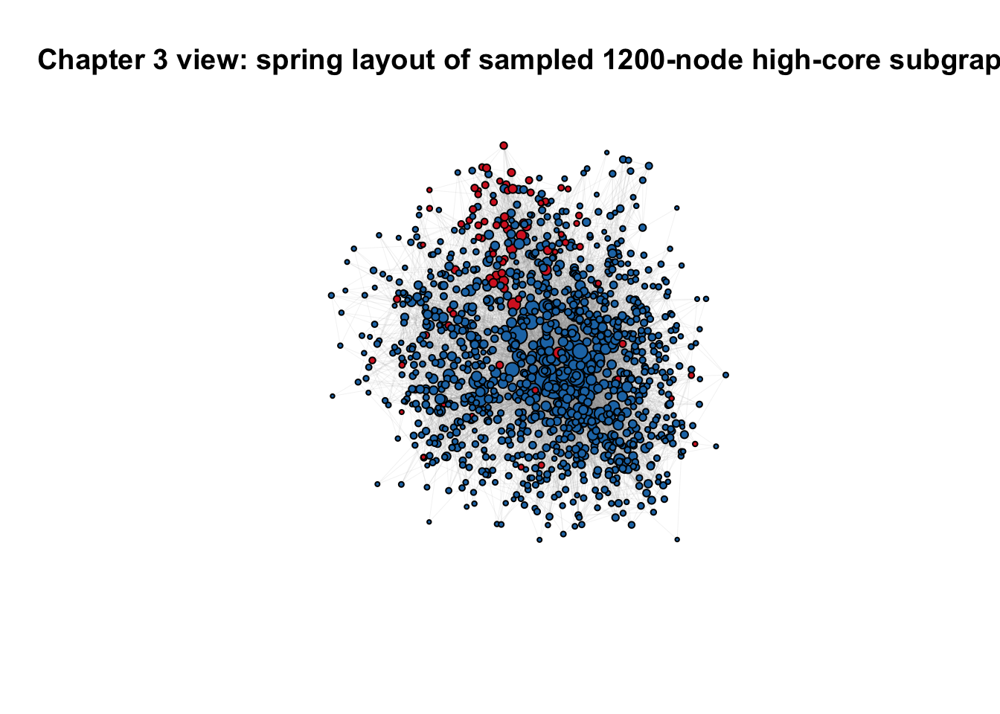
open_pdf_device(plot_file, width = 10.5, height = 8.5)
plot(
g_vis,
layout = layout_vis,
vertex.color = vis_cols,
vertex.size = vis_sizes,
vertex.label = NA,
edge.width = 0.3,
edge.color = adjustcolor("#999999", alpha.f = 0.2),
main = sprintf("Chapter 3 view: spring layout of sampled %s-node high-core subgraph", vcount(g_vis))
)
dev.off()quartz_off_screen
2 Chapter 4: Descriptive Analysis of Graph Characteristics
degree_vals <- as.numeric(degree_map)
degree_stats <- tibble(
mean_degree = mean(degree_vals),
std_degree = sd(degree_vals),
median_degree = median(degree_vals),
max_degree = max(degree_vals),
p90_degree = as.numeric(quantile(degree_vals, 0.90)),
p99_degree = as.numeric(quantile(degree_vals, 0.99))
)
ccdf_df <- tibble(
degree = sort(degree_vals),
ccdf = 1 - (seq_along(degree_vals) / length(degree_vals))
)ccdf_plot <- ggplot(ccdf_df, aes(x = degree, y = pmax(ccdf, 1e-8))) +
geom_point(alpha = 0.45, size = 0.4) +
scale_x_log10() +
scale_y_log10() +
labs(title = "Chapter 4: Degree CCDF (log-log)", x = "Degree", y = "CCDF") +
theme_codex
print(ccdf_plot)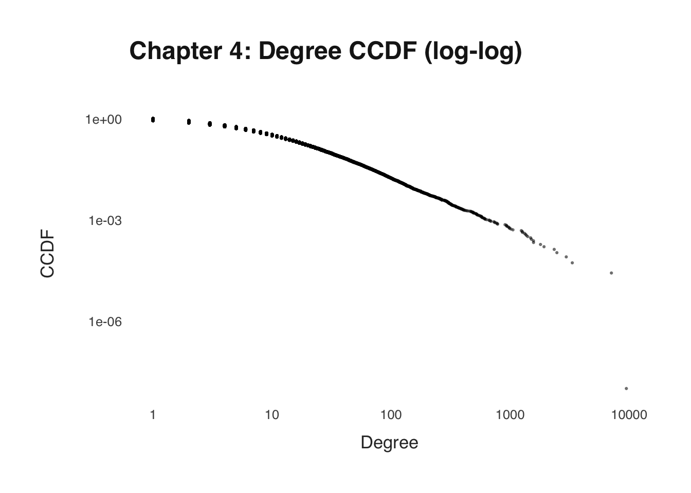
ggsave(file.path(out_dir, "chapter4_degree_ccdf.pdf"), ccdf_plot, width = 8, height = 5, dpi = 240)pagerank_named <- page_rank(g)$vector
pagerank_map <- numeric(n_nodes)
pagerank_map[as.integer(names(pagerank_named)) + 1L] <- as.numeric(pagerank_named)
centrality_df <- tibble(
id = 0:(n_nodes - 1L),
name = name_vec,
ml_target = ml_target,
degree = degree_map,
degree_centrality = degree_map / (n_nodes - 1),
pagerank = pagerank_map,
core_number = core_map
)
top_central <- centrality_df %>%
arrange(desc(pagerank)) %>%
slice_head(n = 20)
global_metrics <- tibble(
components = components(g)$no,
transitivity = transitivity(g, type = "global"),
degree_assortativity = assortativity_degree(g, directed = FALSE),
ml_target_assortativity = assortativity_nominal(g, as.factor(V(g)$ml_target), directed = FALSE),
approx_avg_path_length = approx_average_path_length(g, sample_size = 256, seed = 42),
max_core = max(core_map)
)print(degree_stats)# A tibble: 1 × 6
mean_degree std_degree median_degree max_degree p90_degree p99_degree
<dbl> <dbl> <dbl> <dbl> <dbl> <dbl>
1 15.3 80.8 6 9458 30 138.print(global_metrics)# A tibble: 1 × 6
components transitivity degree_assortativity ml_target_assortativity
<dbl> <dbl> <dbl> <dbl>
1 1 0.0124 -0.0752 0.378
# ℹ 2 more variables: approx_avg_path_length <dbl>, max_core <int>print(top_central)# A tibble: 20 × 7
id name ml_target degree degree_centrality pagerank core_number
<int> <chr> <dbl> <int> <dbl> <dbl> <int>
1 31890 dalinhuang99 0 9458 0.251 0.0169 34
2 27803 nfultz 0 7085 0.188 0.0115 34
3 35773 addyosmani 0 3324 0.0882 0.00506 34
4 19222 Bunlong 0 2958 0.0785 0.00473 34
5 13638 gabrielpconcei… 0 2468 0.0655 0.00393 34
6 36652 rfthusn 0 2343 0.0622 0.00387 34
7 18163 nelsonic 0 1924 0.0510 0.00345 34
8 9051 getify 0 1797 0.0477 0.00280 34
9 10001 ronenhamias 0 1568 0.0416 0.00270 34
10 35008 mdo 0 1571 0.0417 0.00240 34
11 5629 pengliheng 0 1316 0.0349 0.00230 34
12 36628 SuriyaaKudoIsc 0 1507 0.0400 0.00228 34
13 33671 shayan-taheri 0 1347 0.0357 0.00222 33
14 19253 JonnyBanana 0 1404 0.0372 0.00213 34
15 7027 jeresig 0 1485 0.0394 0.00211 34
16 2078 mbostock 0 1368 0.0363 0.00211 34
17 11051 sdras 0 1240 0.0329 0.00193 34
18 73 kentcdodds 0 1267 0.0336 0.00190 34
19 3712 isaacs 0 1264 0.0335 0.00175 34
20 30002 kauegimenes 0 1055 0.0280 0.00149 34top_plot <- top_central %>%
arrange(pagerank) %>%
mutate(label = paste0(id, ":", substr(name, 1, 10)))
top_pr_plot <- ggplot(top_plot, aes(x = reorder(label, pagerank), y = pagerank)) +
geom_col(fill = "#2ca02c") +
coord_flip() +
labs(title = "Chapter 4: Top 20 nodes by PageRank", x = "Node", y = "PageRank") +
theme_codex
print(top_pr_plot)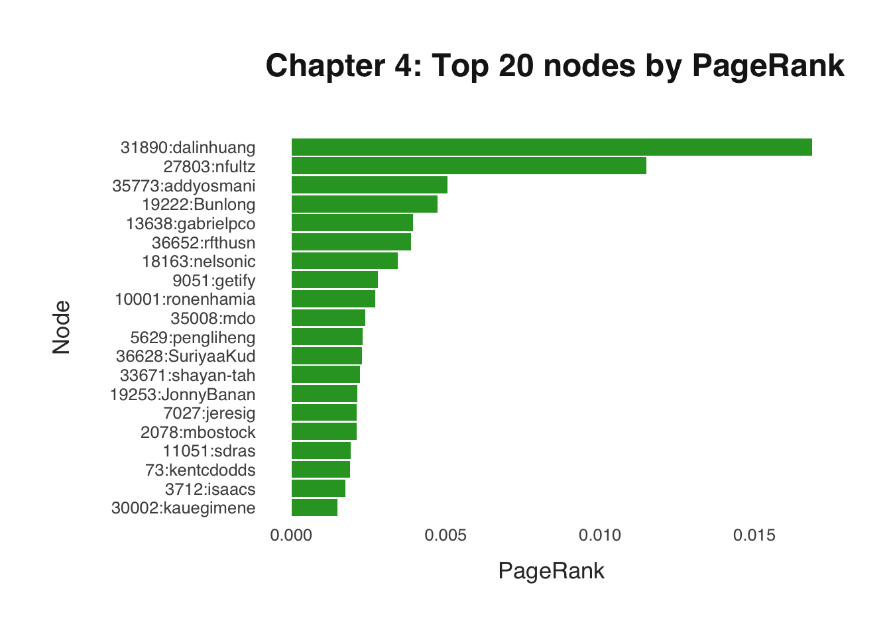
ggsave(file.path(out_dir, "chapter4_top_pagerank.pdf"), top_pr_plot, width = 9, height = 6, dpi = 240)write_csv(degree_stats, file.path(out_dir, "chapter4_degree_stats.csv"))
write_csv(global_metrics, file.path(out_dir, "chapter4_global_metrics.csv"))
write_csv(top_central, file.path(out_dir, "chapter4_top_centrality.csv"))Chapter 4A: Extended Plot Suite
degree_df <- tibble(degree = degree_vals)
rank_degree_df <- tibble(
rank = seq_along(degree_vals),
degree = sort(degree_vals, decreasing = TRUE)
)
deg_hist_linear <- ggplot(degree_df, aes(x = degree)) +
geom_histogram(bins = 60, fill = "#1f77b4", alpha = 0.8) +
labs(title = "Degree Histogram (Linear Scale)", x = "Degree", y = "Count") +
theme_codex
deg_hist_log <- ggplot(degree_df %>% filter(degree > 0), aes(x = degree)) +
geom_histogram(bins = 70, fill = "#ff7f0e", alpha = 0.8) +
scale_x_log10() +
scale_y_log10() +
labs(title = "Degree Histogram (Log-Log)", x = "Degree (log10)", y = "Count (log10)") +
theme_codex
rank_degree_plot <- ggplot(rank_degree_df %>% filter(degree > 0), aes(x = rank, y = degree)) +
geom_line(color = "#2ca02c", linewidth = 0.5) +
scale_x_log10() +
scale_y_log10() +
labs(title = "Rank-Degree Plot (Log-Log)", x = "Rank", y = "Degree") +
theme_codex
print(deg_hist_linear)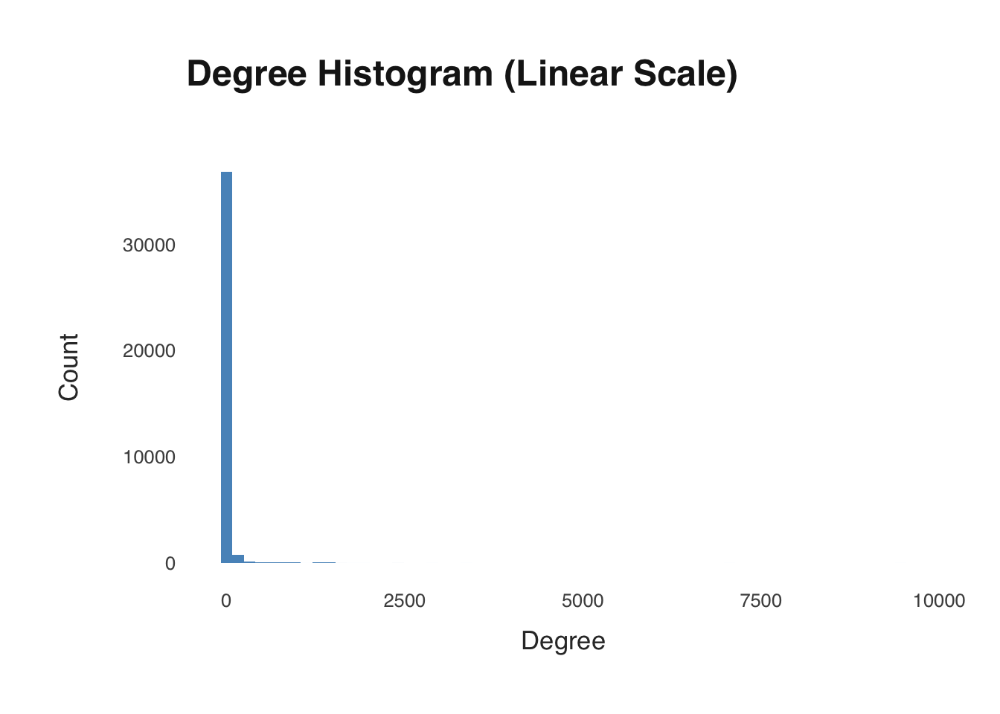
print(deg_hist_log)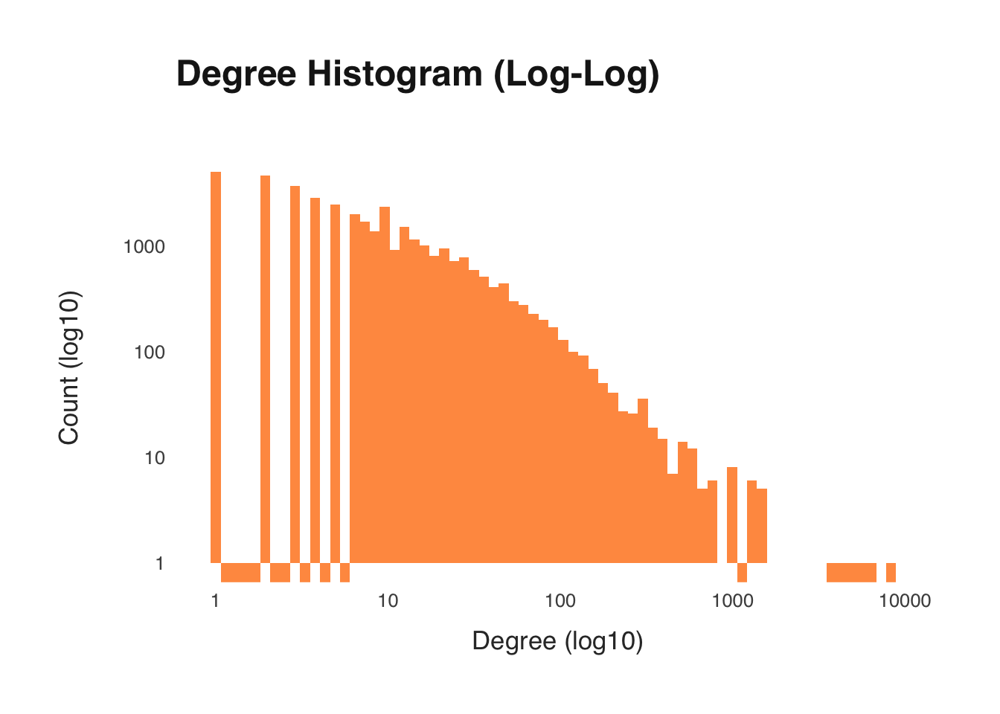
print(rank_degree_plot)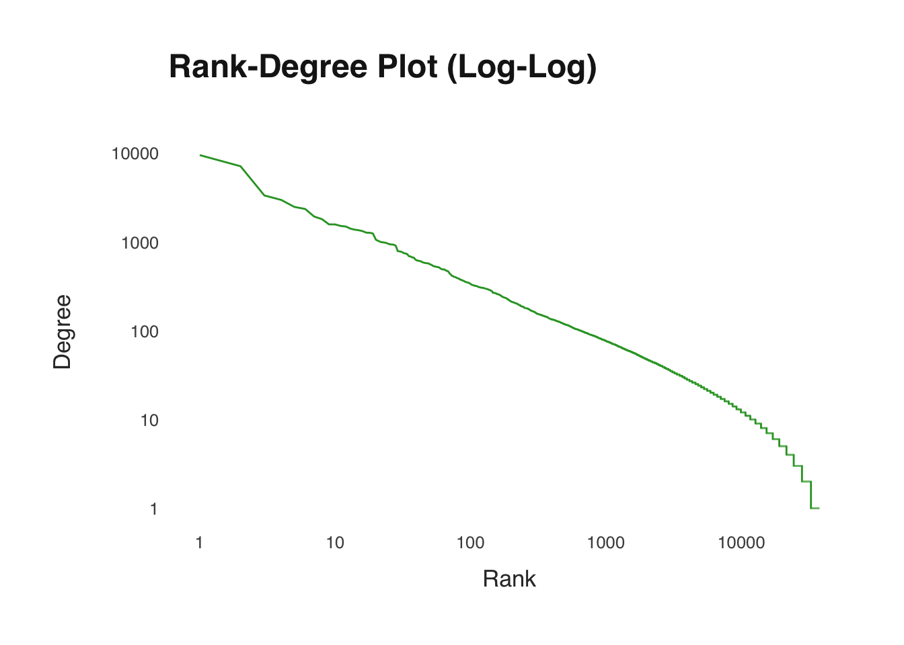
ggsave(file.path(out_dir, "chapter4_degree_hist_linear.pdf"), deg_hist_linear, width = 8, height = 5, dpi = 240)
ggsave(file.path(out_dir, "chapter4_degree_hist_log.pdf"), deg_hist_log, width = 8, height = 5, dpi = 240)
ggsave(file.path(out_dir, "chapter4_rank_degree.pdf"), rank_degree_plot, width = 8, height = 5, dpi = 240)local_cc <- transitivity(g, type = "localundirected", isolates = "zero")
local_cc_df <- tibble(local_clustering = local_cc)
cc_plot <- ggplot(local_cc_df, aes(x = local_clustering)) +
geom_histogram(bins = 60, fill = "#9467bd", alpha = 0.8) +
labs(title = "Local Clustering Coefficient Distribution", x = "Local Clustering", y = "Count") +
theme_codex
core_df <- tibble(core_number = core_map)
core_plot <- ggplot(core_df, aes(x = core_number)) +
geom_histogram(binwidth = 1, fill = "#17becf", alpha = 0.85) +
labs(title = "k-Core Distribution", x = "Core Number", y = "Count") +
theme_codex
print(cc_plot)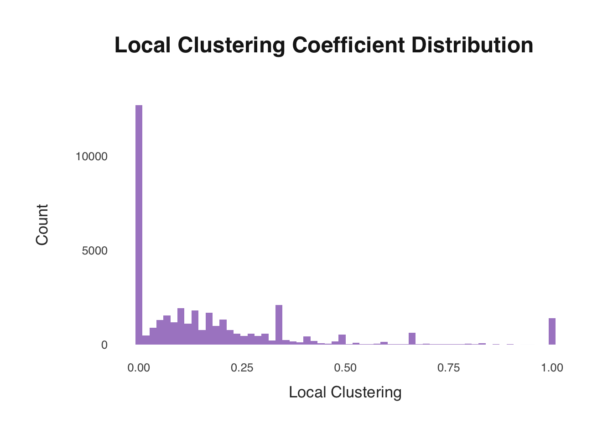
print(core_plot)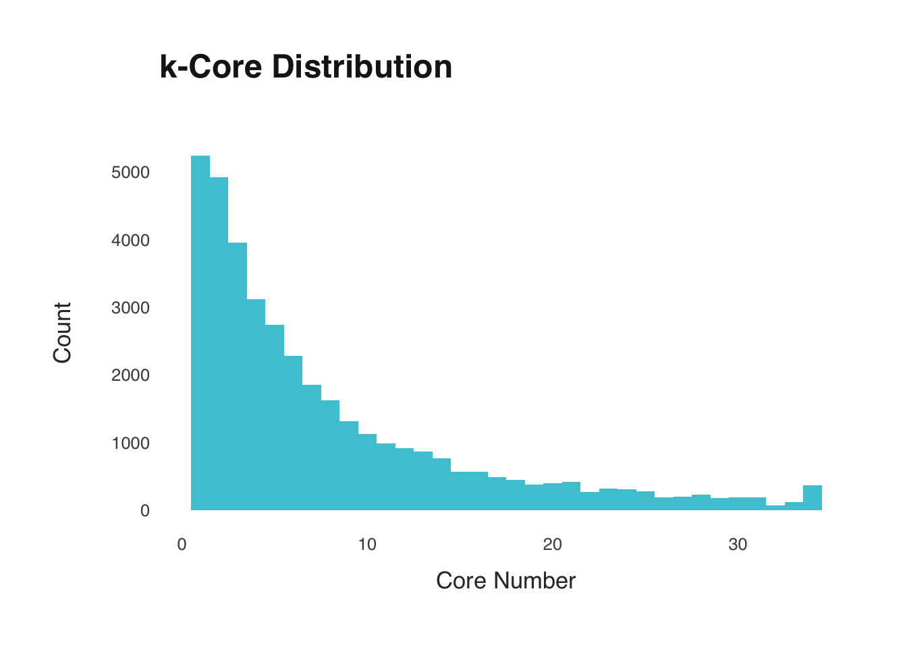
ggsave(file.path(out_dir, "chapter4_local_clustering.pdf"), cc_plot, width = 8, height = 5, dpi = 240)
ggsave(file.path(out_dir, "chapter4_core_distribution.pdf"), core_plot, width = 8, height = 5, dpi = 240)set.seed(42)
path_sources <- sample(V(g), min(250, vcount(g)), replace = FALSE)
dist_list <- vector("list", length(path_sources))
for (i in seq_along(path_sources)) {
d <- distances(g, v = path_sources[i], to = V(g), mode = "all")
dist_list[[i]] <- as.numeric(d[is.finite(d) & d > 0])
}
path_dists <- unlist(dist_list, use.names = FALSE)
path_df <- tibble(path_length = path_dists)
path_plot <- ggplot(path_df, aes(x = path_length)) +
geom_histogram(binwidth = 1, fill = "#8c564b", alpha = 0.85) +
labs(title = "Sampled Shortest-Path Length Distribution", x = "Shortest Path Length", y = "Frequency") +
theme_codex
print(path_plot)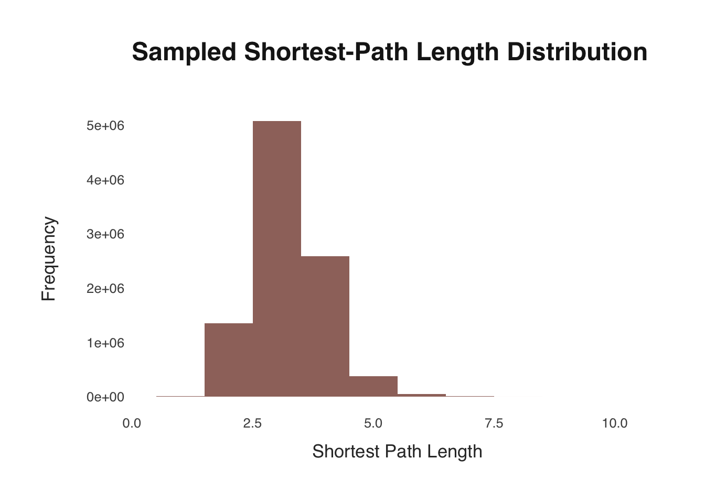
ggsave(file.path(out_dir, "chapter4_path_length_sample.pdf"), path_plot, width = 8, height = 5, dpi = 240)edge_types <- igraph::as_data_frame(g, what = "edges") %>%
transmute(
t1 = ml_target[as.integer(from) + 1L],
t2 = ml_target[as.integer(to) + 1L]
)
mix_raw <- table(
factor(edge_types$t1, levels = c(0, 1)),
factor(edge_types$t2, levels = c(0, 1))
)
mix_mat <- mix_raw + t(mix_raw) - diag(diag(mix_raw))
mix_df <- as.data.frame(as.table(mix_mat))
colnames(mix_df) <- c("ml_target_1", "ml_target_2", "edges")
mix_plot <- ggplot(mix_df, aes(x = ml_target_1, y = ml_target_2, fill = edges)) +
geom_tile(color = "white") +
geom_text(aes(label = edges), color = "black", size = 5) +
scale_fill_gradient(low = "#deebf7", high = "#08519c") +
labs(title = "Mixing Matrix by ml_target", x = "ml_target", y = "ml_target", fill = "Edge Count") +
theme_codex
print(mix_plot)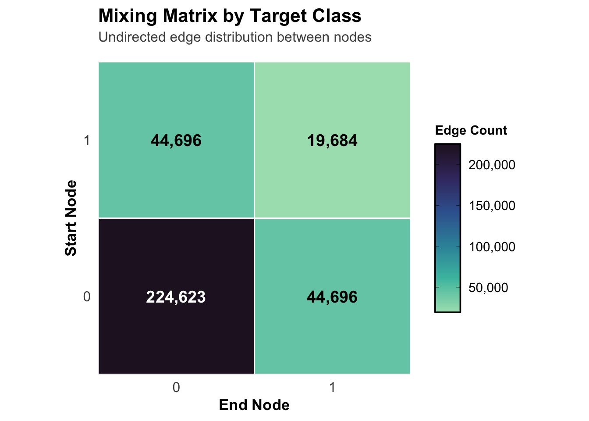
ggsave(file.path(out_dir, "chapter4_mixing_heatmap.pdf"), mix_plot, width = 6, height = 5, dpi = 240)
write_csv(mix_df, file.path(out_dir, "chapter4_mixing_matrix.csv"))louv <- cluster_louvain(g)
community_sizes <- tibble(
community = seq_along(sizes(louv)),
size = as.integer(sizes(louv))
) %>%
arrange(desc(size))
community_summary <- tibble(
num_communities = nrow(community_sizes),
modularity = modularity(louv),
largest_community = max(community_sizes$size),
median_community = median(community_sizes$size)
)
community_plot <- community_sizes %>%
slice_head(n = 30) %>%
mutate(community = factor(community, levels = community)) %>%
ggplot(aes(x = community, y = size)) +
geom_col(fill = "#3182bd") +
labs(title = "Top 30 Louvain Community Sizes", x = "Community ID", y = "Size") +
theme_codex +
theme(axis.text.x = element_text(angle = 90, vjust = 0.5, hjust = 1))
print(community_plot)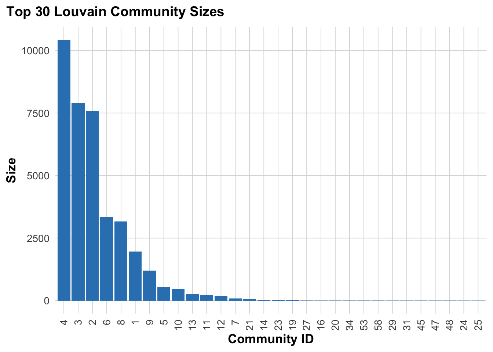
print(community_summary)# A tibble: 1 × 4
num_communities modularity largest_community median_community
<int> <dbl> <int> <int>
1 85 0.453 10427 3ggsave(file.path(out_dir, "chapter4_community_sizes.pdf"), community_plot, width = 11, height = 4.8, dpi = 240)
write_csv(community_sizes, file.path(out_dir, "chapter4_community_sizes.csv"))
write_csv(community_summary, file.path(out_dir, "chapter4_community_summary.csv"))Chapter 4B: Hierarchical Clustering Dendrogram
hc_seed_nodes <- order(core_map, decreasing = TRUE)[1:min(260, n_nodes)] - 1L
g_hc <- induced_subgraph(g, vids = as.character(hc_seed_nodes))
comp_hc <- components(g_hc)
g_hc <- induced_subgraph(g_hc, vids = V(g_hc)[comp_hc$membership == which.max(comp_hc$csize)])
if (vcount(g_hc) > 180) {
set.seed(42)
keep <- sample(V(g_hc)$name, 180)
g_hc <- induced_subgraph(g_hc, vids = keep)
}
dmat <- distances(g_hc, mode = "all")
if (any(!is.finite(dmat))) {
max_finite <- max(dmat[is.finite(dmat)])
dmat[!is.finite(dmat)] <- max_finite + 1
}
hc_fit <- hclust(as.dist(dmat), method = "average")dend_file <- file.path(out_dir, "chapter4_hclust_dendrogram.pdf")
plot(
hc_fit,
labels = FALSE,
hang = -1,
main = sprintf("Hierarchical Clustering Dendrogram (n = %s)", vcount(g_hc)),
xlab = "Sampled High-Core Nodes",
ylab = "Shortest-Path Distance"
)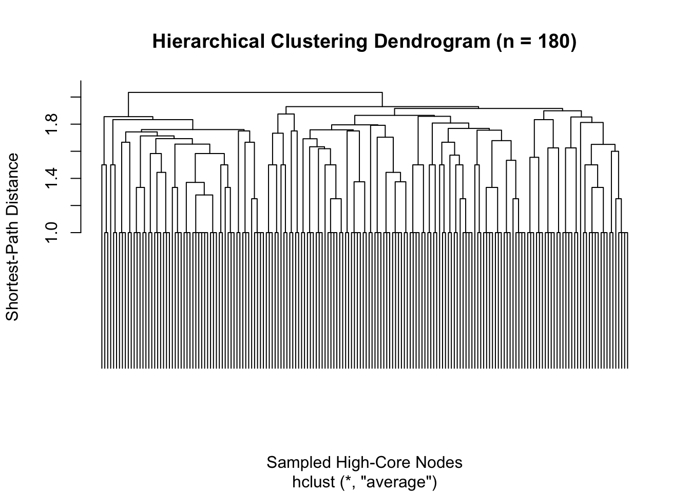
open_pdf_device(dend_file, width = 10.5, height = 6.5)
plot(
hc_fit,
labels = FALSE,
hang = -1,
main = sprintf("Hierarchical Clustering Dendrogram (n = %s)", vcount(g_hc)),
xlab = "Sampled High-Core Nodes",
ylab = "Shortest-Path Distance"
)
dev.off()quartz_off_screen
2 k_cut <- min(8, max(3, floor(sqrt(vcount(g_hc)) / 2)))
hc_clusters <- cutree(hc_fit, k = k_cut)
hc_cluster_sizes <- tibble(cluster = as.factor(hc_clusters)) %>%
count(cluster, name = "size") %>%
arrange(desc(size))
hc_cluster_plot <- ggplot(hc_cluster_sizes, aes(x = reorder(cluster, -size), y = size)) +
geom_col(fill = "#756bb1") +
labs(
title = sprintf("Cluster Sizes from Dendrogram Cut (k = %s)", k_cut),
x = "Cluster",
y = "Size"
) +
theme_codex
print(hc_cluster_plot)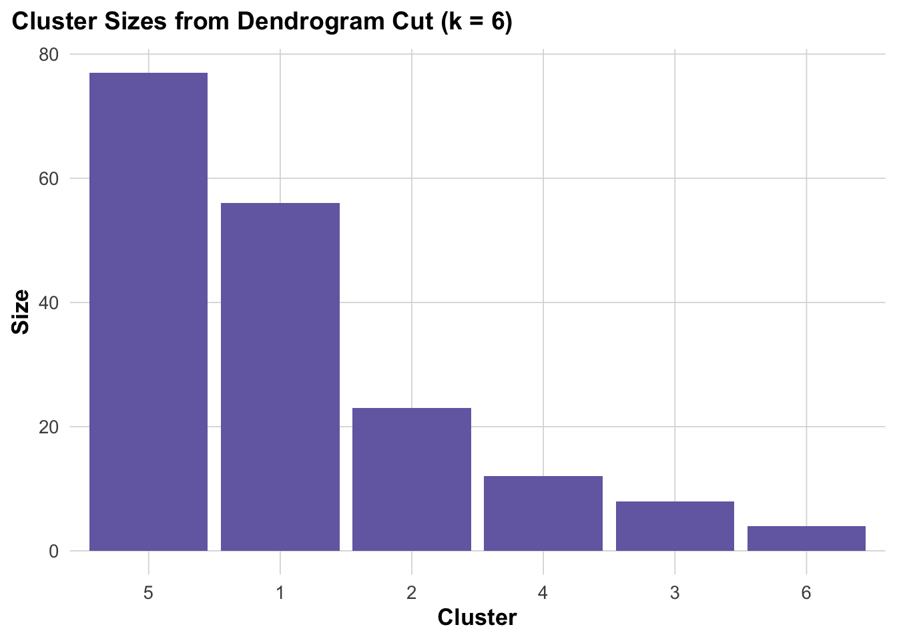
ggsave(file.path(out_dir, "chapter4_hclust_cluster_sizes.pdf"), hc_cluster_plot, width = 7, height = 5, dpi = 240)
write_csv(hc_cluster_sizes, file.path(out_dir, "chapter4_hclust_cluster_sizes.csv"))Chapter 4C: Laplacian Eigenvalue Analysis
L_sparse <- laplacian_matrix(g, normalized = FALSE, sparse = TRUE)
small_vals <- NA_real_
large_vals <- NA_real_
using_full_graph_spectral <- FALSE
if (requireNamespace("RSpectra", quietly = TRUE)) {
small_vals <- tryCatch(
sort(Re(RSpectra::eigs_sym(L_sparse, k = 25, which = "SA")$values)),
error = function(e) NA_real_
)
large_vals <- tryCatch(
sort(Re(RSpectra::eigs_sym(L_sparse, k = 25, which = "LA")$values), decreasing = TRUE),
error = function(e) NA_real_
)
using_full_graph_spectral <- !all(is.na(small_vals)) && !all(is.na(large_vals))
}
if (!using_full_graph_spectral) {
spec_ids <- order(core_map, decreasing = TRUE)[1:min(900, n_nodes)] - 1L
g_spec_fb <- induced_subgraph(g, vids = as.character(spec_ids))
comp_fb <- components(g_spec_fb)
g_spec_fb <- induced_subgraph(g_spec_fb, vids = V(g_spec_fb)[comp_fb$membership == which.max(comp_fb$csize)])
L_fb <- laplacian_matrix(g_spec_fb, normalized = FALSE, sparse = FALSE)
eig_fb <- sort(eigen(L_fb, symmetric = TRUE, only.values = TRUE)$values)
small_vals <- eig_fb[1:min(25, length(eig_fb))]
large_vals <- rev(tail(eig_fb, min(25, length(eig_fb))))
}
fiedler_value <- ifelse(length(small_vals) >= 2, small_vals[2], NA_real_)
near_zero_count <- sum(abs(small_vals) < 1e-8)
largest_eig <- ifelse(length(large_vals) >= 1, large_vals[1], NA_real_)
top_gap <- ifelse(length(large_vals) >= 2, large_vals[1] - large_vals[2], NA_real_)
lap_summary <- tibble(
components = components(g)$no,
near_zero_eigenvalues = near_zero_count,
fiedler_value = fiedler_value,
largest_eigenvalue = largest_eig,
top_spectral_gap = top_gap,
used_full_graph = using_full_graph_spectral
)small_df <- tibble(index = seq_along(small_vals), eigenvalue = as.numeric(small_vals))
large_df <- tibble(index = seq_along(large_vals), eigenvalue = as.numeric(large_vals))
small_plot <- ggplot(small_df, aes(x = index, y = eigenvalue)) +
geom_line(color = "#e6550d") +
geom_point(color = "#e6550d", size = 1.5) +
labs(title = "Smallest Laplacian Eigenvalues", x = "Order", y = "Eigenvalue") +
theme_codex
print(small_plot)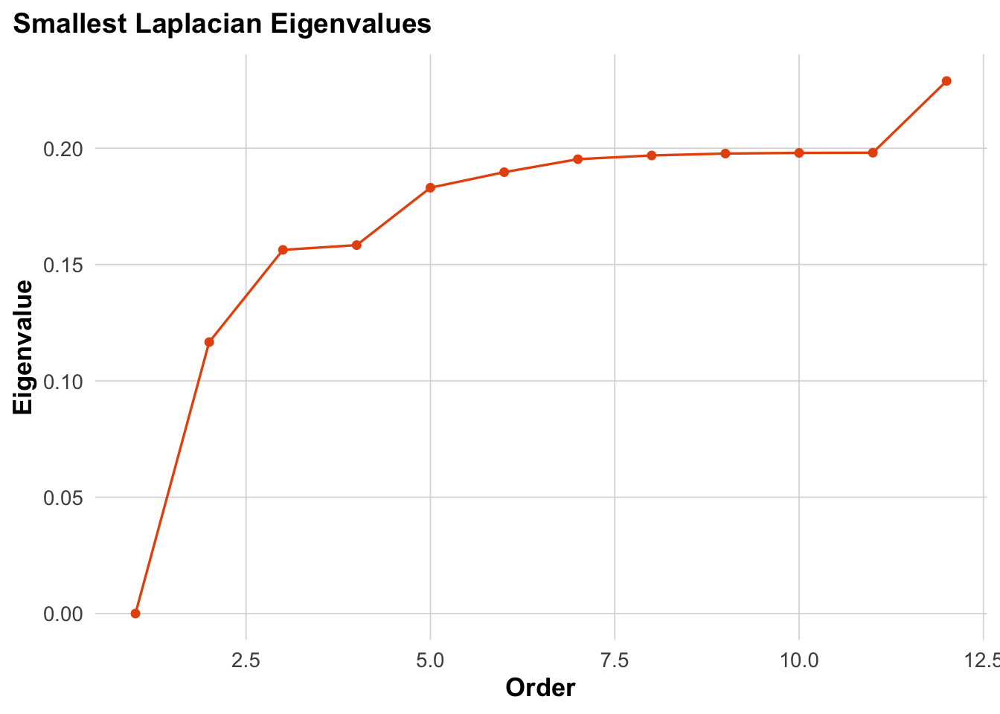
ggsave(file.path(out_dir, "chapter4_laplacian_smallest_plot.pdf"), small_plot, width = 8, height = 5, dpi = 240)
write_csv(small_df, file.path(out_dir, "chapter4_laplacian_smallest.csv"))
write_csv(large_df, file.path(out_dir, "chapter4_laplacian_largest.csv"))spec_ids <- order(degree_map, decreasing = TRUE)[1:min(420, n_nodes)] - 1L
g_spec <- induced_subgraph(g, vids = as.character(spec_ids))
comp_spec <- components(g_spec)
g_spec <- induced_subgraph(g_spec, vids = V(g_spec)[comp_spec$membership == which.max(comp_spec$csize)])
L_sub <- laplacian_matrix(g_spec, normalized = TRUE, sparse = FALSE)
eig_sub <- sort(eigen(L_sub, symmetric = TRUE, only.values = TRUE)$values)
eig_sub_df <- tibble(index = seq_along(eig_sub), eigenvalue = eig_sub)
sub_spec_plot <- ggplot(eig_sub_df, aes(x = index, y = eigenvalue)) +
geom_line(color = "#31a354") +
labs(
title = sprintf("Normalized Laplacian Spectrum (Subgraph n = %s)", vcount(g_spec)),
x = "Eigenvalue Index",
y = "Eigenvalue"
) +
theme_codex
print(sub_spec_plot)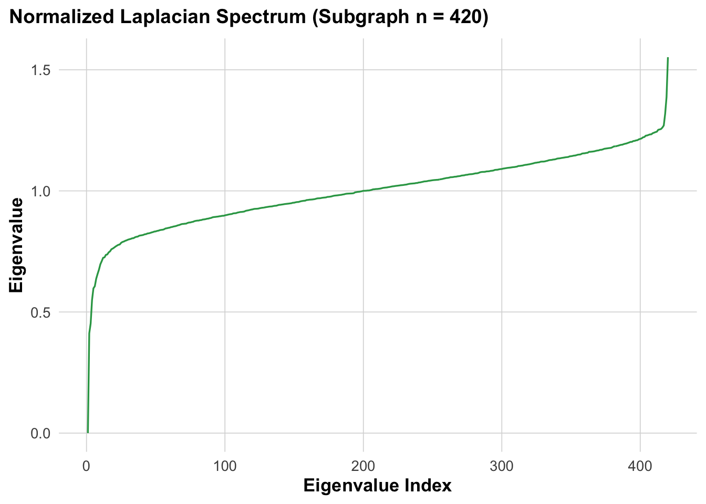
ggsave(file.path(out_dir, "chapter4_laplacian_subgraph_spectrum.pdf"), sub_spec_plot, width = 8, height = 5, dpi = 240)
write_csv(eig_sub_df, file.path(out_dir, "chapter4_laplacian_subgraph_spectrum.csv"))print(lap_summary)# A tibble: 1 × 6
components near_zero_eigenvalues fiedler_value largest_eigenvalue
<dbl> <int> <dbl> <dbl>
1 1 1 0.117 9459.
# ℹ 2 more variables: top_spectral_gap <dbl>, used_full_graph <lgl>cat("Laplacian interpretation notes:\\n")Laplacian interpretation notes:\ncat("- The multiplicity of eigenvalue 0 should match the number of connected components.\\n")- The multiplicity of eigenvalue 0 should match the number of connected components.\ncat("- Here, components =", lap_summary$components, "and near-zero smallest eigenvalues =", lap_summary$near_zero_eigenvalues, ".\\n")- Here, components = 1 and near-zero smallest eigenvalues = 1 .\ncat("- The second-smallest eigenvalue (Fiedler value) is", signif(lap_summary$fiedler_value, 6),
"which reflects algebraic connectivity (larger means more strongly connected).\\n")- The second-smallest eigenvalue (Fiedler value) is 0.116668 which reflects algebraic connectivity (larger means more strongly connected).\ncat("- The largest eigenvalue is", signif(lap_summary$largest_eigenvalue, 6),
"and the top spectral gap is", signif(lap_summary$top_spectral_gap, 6),
"which summarize upper-spectrum spread tied to hub structure.\\n")- The largest eigenvalue is 9459 and the top spectral gap is 2373 which summarize upper-spectrum spread tied to hub structure.\nwrite_csv(lap_summary, file.path(out_dir, "chapter4_laplacian_summary.csv"))Chapter 5: Mathematical Models for Network Graphs
n <- vcount(g)
m <- ecount(g)
p_er <- (2 * m) / (n * (n - 1))
model_rows <- list(row_from_graph(g, "Observed", 0))
num_reps <- 2
for (rep in seq_len(num_reps)) {
g_er <- sample_gnp(n, p_er, directed = FALSE, loops = FALSE)
V(g_er)$name <- all_ids
model_rows[[length(model_rows) + 1]] <- row_from_graph(g_er, "Erdos-Renyi", rep)
g_cfg <- sample_degseq(degree_map, method = "vl")
g_cfg <- as.undirected(g_cfg, mode = "collapse")
g_cfg <- simplify(g_cfg, remove.multiple = TRUE, remove.loops = TRUE)
V(g_cfg)$name <- all_ids
model_rows[[length(model_rows) + 1]] <- row_from_graph(g_cfg, "Configuration", rep)
}
model_cmp <- bind_rows(model_rows)
obs <- model_cmp %>% filter(model == "Observed")
er_mean <- model_cmp %>%
filter(model == "Erdos-Renyi") %>%
summarise(
transitivity = mean(transitivity),
approx_avg_path_length = mean(approx_avg_path_length)
)
small_world_score <- (obs$transitivity / er_mean$transitivity) /
(obs$approx_avg_path_length / er_mean$approx_avg_path_length)
cut_tail <- quantile(degree_vals, 0.90)
tail_vals <- degree_vals[degree_vals >= cut_tail]
tail_tab <- as.data.frame(table(tail_vals))
if (nrow(tail_tab) >= 2) {
fit <- lm(log(Freq) ~ log(as.numeric(as.character(tail_vals))), data = tail_tab)
tail_gamma <- -coef(fit)[2]
} else {
tail_gamma <- NA_real_
}
chapter5_summary <- tibble(
p_er = p_er,
small_world_score_vs_er = small_world_score,
tail_exponent_gamma_estimate = tail_gamma
)print(model_cmp)# A tibble: 5 × 6
model replicate nodes edges transitivity approx_avg_path_length
<chr> <dbl> <dbl> <dbl> <dbl> <dbl>
1 Observed 0 37700 289003 0.0124 3.26
2 Erdos-Renyi 1 37700 289278 0.000388 4.14
3 Configuration 1 37700 289003 0.0123 3.09
4 Erdos-Renyi 2 37700 290094 0.000405 4.13
5 Configuration 2 37700 289003 0.0122 3.17print(chapter5_summary)# A tibble: 1 × 3
p_er small_world_score_vs_er tail_exponent_gamma_estimate
<dbl> <dbl> <dbl>
1 0.000407 39.5 1.22plot_df <- model_cmp %>%
filter(model != "Observed") %>%
pivot_longer(cols = c(transitivity, approx_avg_path_length), names_to = "metric", values_to = "value")
obs_long <- obs %>%
pivot_longer(cols = c(transitivity, approx_avg_path_length), names_to = "metric", values_to = "obs_value")
cmp_plot <- ggplot(plot_df, aes(x = model, y = value)) +
geom_boxplot() +
geom_hline(data = obs_long, aes(yintercept = obs_value), color = "red", linetype = "dashed") +
facet_wrap(~ metric, scales = "free_y") +
labs(title = "Chapter 5: Observed graph vs random-graph baselines", x = "Model", y = "Value") +
theme_codex
print(cmp_plot)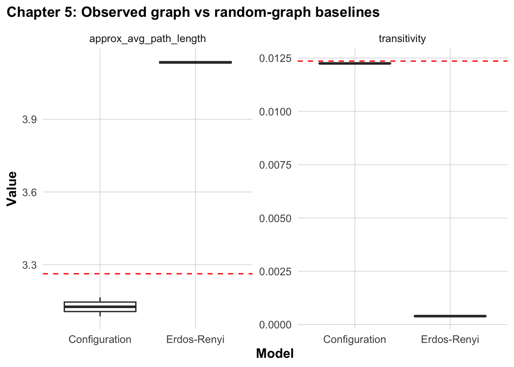
ggsave(file.path(out_dir, "chapter5_model_comparison.pdf"), cmp_plot, width = 11, height = 4.5, dpi = 240)write_csv(model_cmp, file.path(out_dir, "chapter5_model_comparison.csv"))
write_csv(chapter5_summary, file.path(out_dir, "chapter5_summary.csv"))Chapter 6: Statistical Models for Network Graphs
neighbors_full <- vector("list", n_nodes)
adj_full <- adjacent_vertices(g, V(g), mode = "all")
for (i in seq_along(adj_full)) {
id <- as.integer(V(g)$name[i])
neighbors_full[[id + 1L]] <- as.integer(V(g)[adj_full[[i]]]$name)
}
all_edges <- igraph::as_data_frame(g, what = "edges") %>%
transmute(u = as.integer(from), v = as.integer(to))
n_pos <- min(30000, nrow(all_edges))
train_pos <- all_edges %>% slice_sample(n = n_pos)
train_neg <- sample_non_edges(n_nodes, edge_key_set, n_pos, seed = 42)
pairs_dyad <- bind_rows(train_pos, train_neg)
y_dyad <- c(rep(1, n_pos), rep(0, n_pos))
X_dyad <- compute_link_features(pairs_dyad, neighbors_full, degree_map, ml_target) %>%
mutate(log_degree_product = log1p(preferential_attachment)) %>%
select(common_neighbors, jaccard, adamic_adar, same_ml_target, log_degree_product)split_dyad <- stratified_split(y_dyad, train_frac = 0.75, seed = 42)
train_df <- cbind(y = y_dyad[split_dyad$train], X_dyad[split_dyad$train, ]) %>% as.data.frame()
test_df <- cbind(y = y_dyad[split_dyad$test], X_dyad[split_dyad$test, ]) %>% as.data.frame()
dyad_fit <- glm(y ~ ., data = train_df, family = binomial())
dyad_pred <- predict(dyad_fit, newdata = test_df, type = "response")
dyad_auc <- auc_score(test_df$y, dyad_pred)
coef_df <- tibble(
feature = names(coef(dyad_fit))[-1],
coefficient = as.numeric(coef(dyad_fit)[-1])
) %>%
arrange(desc(coefficient))edge_ml <- all_edges %>%
mutate(
t1 = ml_target[u + 1L],
t2 = ml_target[v + 1L]
)
count_00 <- sum(edge_ml$t1 == 0 & edge_ml$t2 == 0)
count_11 <- sum(edge_ml$t1 == 1 & edge_ml$t2 == 1)
count_01 <- sum(edge_ml$t1 != edge_ml$t2)
n0 <- sum(ml_target == 0)
n1 <- sum(ml_target == 1)
block_probs <- tibble(
block = c("0-0", "0-1", "1-1"),
observed_edges = c(count_00, count_01, count_11),
possible_pairs = c(n0 * (n0 - 1) / 2, n0 * n1, n1 * (n1 - 1) / 2),
edge_probability = observed_edges / possible_pairs
)A_sparse <- as_adjacency_matrix(g, sparse = TRUE)
latent_xy <- matrix(NA_real_, nrow = n_nodes, ncol = 2)
if (requireNamespace("RSpectra", quietly = TRUE)) {
sv <- RSpectra::svds(A_sparse, k = 2)
latent_xy <- sv$u %*% diag(sv$d)
} else if (requireNamespace("irlba", quietly = TRUE)) {
sv <- irlba::irlba(A_sparse, nv = 2, nu = 2)
latent_xy <- sv$u %*% diag(sv$d)
}
if (all(is.na(latent_xy))) {
latent_auc <- NA_real_
} else {
latent_df <- tibble(y = ml_target, x1 = latent_xy[, 1], x2 = latent_xy[, 2])
split_lat <- stratified_split(latent_df$y, train_frac = 0.75, seed = 42)
latent_train <- latent_df[split_lat$train, ]
latent_test <- latent_df[split_lat$test, ]
latent_fit <- glm(y ~ x1 + x2, data = latent_train, family = binomial())
latent_pred <- predict(latent_fit, newdata = latent_test, type = "response")
latent_auc <- auc_score(latent_test$y, latent_pred)
}if (!all(is.na(latent_xy))) {
sample_n <- min(6000, n_nodes)
idx <- sample(seq_len(n_nodes), sample_n)
latent_plot_df <- tibble(
x = latent_xy[idx, 1],
y = latent_xy[idx, 2],
ml_target = factor(ml_target[idx])
)
latent_plot <- ggplot(latent_plot_df, aes(x = x, y = y, color = ml_target)) +
geom_point(size = 0.7, alpha = 0.55) +
scale_color_manual(values = c("0" = "#1f77b4", "1" = "#d62728")) +
labs(title = "Chapter 6: 2D latent embedding sample", x = "Latent dim 1", y = "Latent dim 2") +
theme_codex
print(latent_plot)
ggsave(file.path(out_dir, "chapter6_latent_embedding.pdf"), latent_plot, width = 8, height = 6, dpi = 240)
}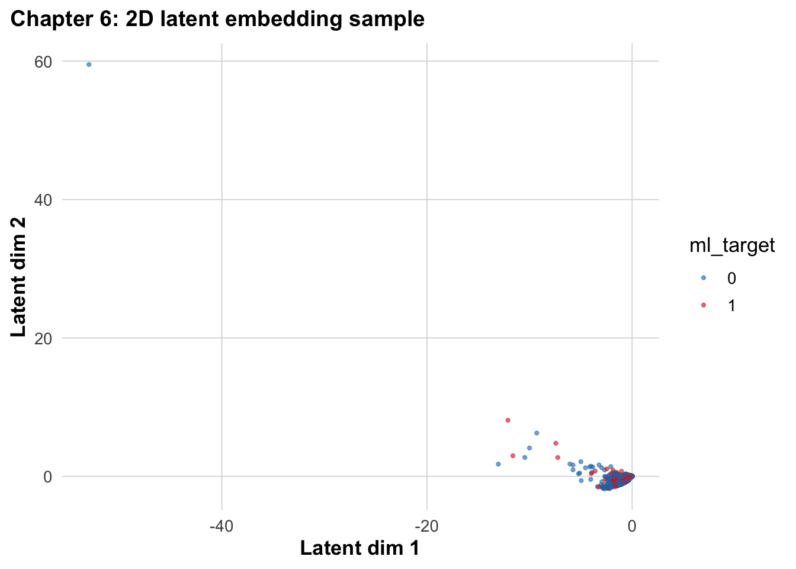
chapter6_summary <- tibble(
dyad_logistic_auc = dyad_auc,
latent_embedding_target_auc = latent_auc,
ml_target_assortativity = assortativity_nominal(g, as.factor(V(g)$ml_target), directed = FALSE)
)
print(coef_df)# A tibble: 5 × 2
feature coefficient
<chr> <dbl>
1 adamic_adar 14.2
2 jaccard 5.30
3 log_degree_product 0.917
4 same_ml_target 0.642
5 common_neighbors -1.90 print(block_probs)# A tibble: 3 × 4
block observed_edges possible_pairs edge_probability
<chr> <int> <dbl> <dbl>
1 0-0 224623 390894780 0.000575
2 0-1 44696 272312179 0.000164
3 1-1 19684 47419191 0.000415print(chapter6_summary)# A tibble: 1 × 3
dyad_logistic_auc latent_embedding_target_auc ml_target_assortativity
<dbl> <dbl> <dbl>
1 0.953 0.510 0.378write_csv(coef_df, file.path(out_dir, "chapter6_dyad_logistic_coefficients.csv"))
write_csv(block_probs, file.path(out_dir, "chapter6_block_model_probabilities.csv"))
write_csv(chapter6_summary, file.path(out_dir, "chapter6_summary.csv"))Chapter 7: Network Topology Inference (Link Prediction)
all_edges <- igraph::as_data_frame(g, what = "edges") %>%
transmute(u = as.integer(from), v = as.integer(to))
n_test <- floor(0.20 * nrow(all_edges))
test_idx <- sample(seq_len(nrow(all_edges)), n_test)
test_pos <- all_edges[test_idx, ]
train_edges <- all_edges[-test_idx, ]
train_edge_mat <- as.matrix(train_edges)
mode(train_edge_mat) <- "character"
g_train <- graph_from_edgelist(train_edge_mat, directed = FALSE)
missing_train <- setdiff(all_ids, V(g_train)$name)
if (length(missing_train) > 0) {
g_train <- add_vertices(g_train, nv = length(missing_train), name = missing_train)
}
g_train <- simplify(g_train, remove.multiple = TRUE, remove.loops = TRUE)
test_neg <- sample_non_edges(n_nodes, edge_key_set, n_test, seed = 43)n_train_lp <- min(30000, nrow(train_edges))
train_pos_lp <- train_edges %>% slice_sample(n = n_train_lp)
forbidden_keys <- edge_key(test_neg$u, test_neg$v)
train_neg_lp <- sample_non_edges(n_nodes, edge_key_set, n_train_lp, forbidden_keys = forbidden_keys, seed = 44)
neighbors_train <- vector("list", n_nodes)
adj_train <- adjacent_vertices(g_train, V(g_train), mode = "all")
for (i in seq_along(adj_train)) {
id <- as.integer(V(g_train)$name[i])
neighbors_train[[id + 1L]] <- as.integer(V(g_train)[adj_train[[i]]]$name)
}
deg_train_named <- degree(g_train)
degree_train <- integer(n_nodes)
degree_train[as.integer(names(deg_train_named)) + 1L] <- as.integer(deg_train_named)X_train_lp <- compute_link_features(bind_rows(train_pos_lp, train_neg_lp), neighbors_train, degree_train, ml_target)
y_train_lp <- c(rep(1, n_train_lp), rep(0, n_train_lp))
X_test_lp <- compute_link_features(bind_rows(test_pos, test_neg), neighbors_train, degree_train, ml_target)
y_test_lp <- c(rep(1, nrow(test_pos)), rep(0, nrow(test_neg)))heuristic_cols <- c("common_neighbors", "jaccard", "adamic_adar", "preferential_attachment", "same_ml_target")
lp_auc <- tibble(
model = heuristic_cols,
auc = sapply(heuristic_cols, function(col) auc_score(y_test_lp, X_test_lp[[col]]))
)
stack_train <- as.data.frame(cbind(y = y_train_lp, X_train_lp))
stack_test <- as.data.frame(cbind(y = y_test_lp, X_test_lp))
stack_fit <- glm(y ~ ., data = stack_train, family = binomial())
stack_score <- predict(stack_fit, newdata = stack_test, type = "response")
stack_auc <- auc_score(stack_test$y, stack_score)
lp_auc <- bind_rows(lp_auc, tibble(model = "stacked_logistic", auc = stack_auc)) %>%
arrange(desc(auc))roc_df <- make_roc_df(y_test_lp, stack_score, n_thresh = 250)
roc_plot <- ggplot(roc_df, aes(x = fpr, y = tpr)) +
geom_line(color = "#2ca02c", linewidth = 0.9) +
geom_abline(intercept = 0, slope = 1, linetype = "dashed", color = "gray50") +
labs(
title = sprintf("Chapter 7: Link prediction ROC (AUC = %.3f)", stack_auc),
x = "False Positive Rate",
y = "True Positive Rate"
) +
theme_codex
print(roc_plot)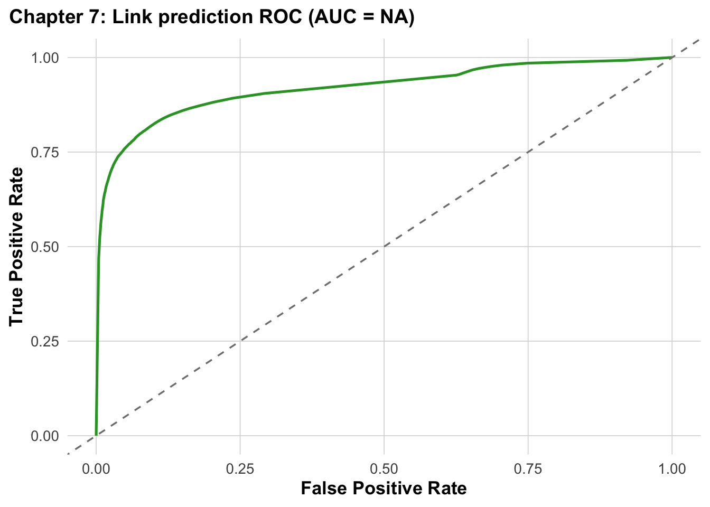
ggsave(file.path(out_dir, "chapter7_link_prediction_roc.pdf"), roc_plot, width = 7, height = 5, dpi = 240)print(lp_auc)# A tibble: 6 × 2
model auc
<chr> <dbl>
1 common_neighbors NA
2 jaccard NA
3 adamic_adar NA
4 preferential_attachment NA
5 same_ml_target NA
6 stacked_logistic NAwrite_csv(lp_auc, file.path(out_dir, "chapter7_link_prediction_auc.csv"))Artifacts
artifacts <- sort(list.files(out_dir))
cat("Saved files in codex_outputs/\n")Saved files in codex_outputs/for (f in artifacts) cat("-", f, "\n")- chapter2_ml_target_balance.csv
- chapter2_top_hubs.csv
- chapter3_layout_high_core.pdf
- chapter3_layout_high_core.png
- chapter4_community_sizes.csv
- chapter4_community_sizes.pdf
- chapter4_community_sizes.png
- chapter4_community_summary.csv
- chapter4_core_distribution.pdf
- chapter4_core_distribution.png
- chapter4_degree_ccdf.pdf
- chapter4_degree_ccdf.png
- chapter4_degree_hist_linear.pdf
- chapter4_degree_hist_linear.png
- chapter4_degree_hist_log.pdf
- chapter4_degree_hist_log.png
- chapter4_degree_stats.csv
- chapter4_global_metrics.csv
- chapter4_hclust_cluster_sizes.csv
- chapter4_hclust_cluster_sizes.pdf
- chapter4_hclust_cluster_sizes.png
- chapter4_hclust_dendrogram.pdf
- chapter4_hclust_dendrogram.png
- chapter4_laplacian_largest.csv
- chapter4_laplacian_smallest_plot.pdf
- chapter4_laplacian_smallest_plot.png
- chapter4_laplacian_smallest.csv
- chapter4_laplacian_subgraph_spectrum.csv
- chapter4_laplacian_subgraph_spectrum.pdf
- chapter4_laplacian_subgraph_spectrum.png
- chapter4_laplacian_summary.csv
- chapter4_local_clustering.pdf
- chapter4_local_clustering.png
- chapter4_mixing_heatmap.pdf
- chapter4_mixing_heatmap.png
- chapter4_mixing_matrix.csv
- chapter4_path_length_sample.pdf
- chapter4_path_length_sample.png
- chapter4_rank_degree.pdf
- chapter4_rank_degree.png
- chapter4_top_centrality.csv
- chapter4_top_pagerank.pdf
- chapter4_top_pagerank.png
- chapter5_model_comparison.csv
- chapter5_model_comparison.pdf
- chapter5_model_comparison.png
- chapter5_summary.csv
- chapter6_block_model_probabilities.csv
- chapter6_dyad_logistic_coefficients.csv
- chapter6_latent_embedding.pdf
- chapter6_latent_embedding.png
- chapter6_summary.csv
- chapter7_link_prediction_auc.csv
- chapter7_link_prediction_roc.pdf
- chapter7_link_prediction_roc.png